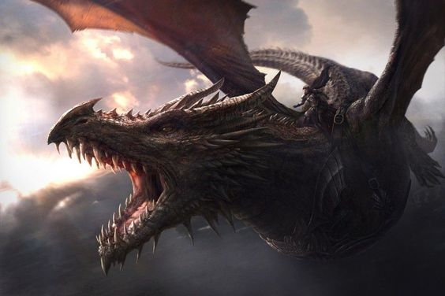
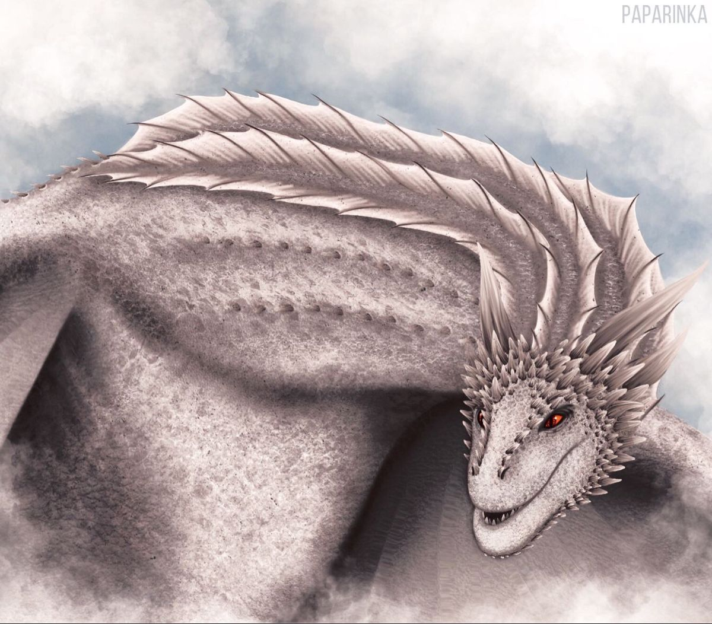
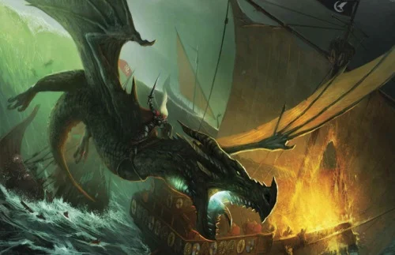

Os Dragões dos Conquistadores
Os dragões da conquista

Balerion
Vhagar
Meraxes
Balerion, O terror negro.
Balerion foi o maior de todos os dragões dos Targaryen, seus dentes eram tão longos como espadas e suas mandíbulas grandes o suficiente para engolir um mamute inteiro. Seu fogo era negro como suas escamas, a sua envergadura tão grande que cidades inteiras caíram sob a sua sombra enquanto ele as sobrevoava.
Balerion recebeu seu nome em honra a um deus da religião valiriana. Ele nasceu em Valíria e foi um dos cinco dragões levados por Aenar Targaryen para Pedra do Dragão para sobreviver a Perdição de Valíria.
Balerion, chamado de Terror Negro, foi um dragão da Casa Targaryen. Ele foi montado pelo Rei Aegon I Targaryen durante a Guerra da Conquista, ao lado de suas irmãs-esposas Visenya, montada em Vhagar, e Rhaenys, montada em Meraxes. Balerion foi montado também pelos Reis Maegor I e Viserys I e brevemente pela princesa Aerea Targaryen. Balerion morreu de velhice em 94 d.C., durante o reinado de Jaehaerys I Targaryen. Ele tinha mais de 200 anos de idade quando faleceu.
Meraxes
Meraxes foi um dos grandes dragões usados por Aegon, o Conquistador, e suas irmãs durante a Guerra da Conquista. Meraxes foi nomeada devido aos antigos deuses de Valíria. Ela foi montado por Rhaenys Targaryen. Meraxes era maior do que Vhagar mas menor do que Balerion. Meraxes conseguia engolir cavalos inteiros, A cor das escamas de Meraxes, seus chifres, ossos da asa e a crista vertebral é desconhecida, assim como a cor da sua chama. Ela nasceu a partir de um ovo de dragão em Pedra do Dragã
A única vez na história que os três lendários dragões Targaryen (Meraxes, Balerion e Vhagar) voaram para o céu ao mesmo tempo. Foi durante a batalha que ficou conhecido como o Campo de Fogo, nela quatro mil homens foram queimados até a morte. Rei Mern IX, o último herdeiro de Jardim de Cima, morreu durante esta batalha, levando ao fim a Casa Gardener. O exército estava quebrado e Aegon foi vitorioso.
O dragão morreu durante a Primeira Guerra Dornesa.
O crânio de Meraxes, junto com os crânios de dezoito outros dragões Targaryen, eram usados como decoração nas paredes da sala do trono na Fortaleza Vermelha. Após a Guerra do Usurpador, Rei Robert removeu os crânios e armazenou em um porão úmido.
Vhagar
Vhagar foi uma dragão-fêmea montada por Visenya durante a Conquista, ao lado do Balerion de Aegon o Conquistador e o Meraxes de sua irmã Rhaenys. Outros cavaleiros de dragão de Vhagar foram Lady Laena Velaryon, Príncipe Aemond Targaryen e Príncipe Baelon Targaryen, o Bravo. Vhagar ganhou este nome em homenagem a um dos deuses da Antiga Valíria.
Em personalidade, a dragão também era considerada muito feroz, bem como extremamente forte, ainda que a idade avançada e seu porte tenha a deixado cada vez mais lenta.
A cor das escamas, chifres, asas, ossos das asas e crista da coluna de Vhagar é desconhecida nos livros de George R. R. Martin, assim como a cor de sua chama. No entanto, a artista contratada para o Calendário 2021 de As Crônicas de Gelo & Fogo, Sam Hogg, pediu esclarecimentos à equipe de George R. R. Martin sobre a aparência da dragão. À ela foi dito que Vhagar era "bronze com faixas azuis esverdeadas, e olhos verdes brilhantes". Por outro lado, no conteúdo suplementar da HBO, a dragão é exibida em cor branca.
“ Vhagar envelhece, mas suas chamas ainda ardem quentes. ” — Visenya Targaryen para Aenys I Targaryen